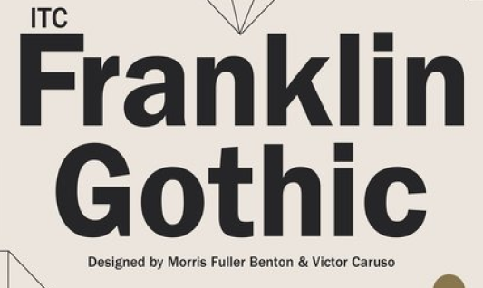
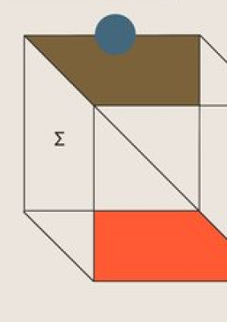
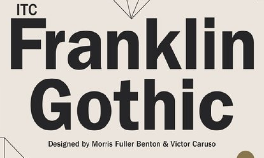
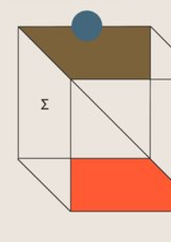
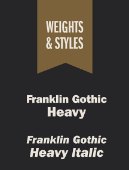
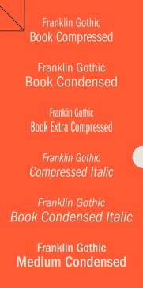
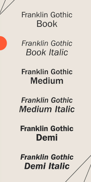
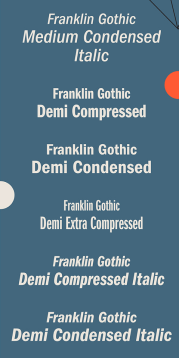

FRANKLIN GOTHIC
 




STORIA
SPECIFICHE TECNICHE
Franklin Gothic è un tipo di carattere sans-serif disegnato da Morris
Fuller Benton (1872-1948) nel 1903. È uno degli oltre 200 tipi disegnati
da Benton.
Si presume che il nome sia un'attribuzione a Benjamin Franklin, mentre l'attributo "gothic" è l'equivalente (anche se sempre meno usato) di sans-serif nei paesi anglofoni.
L'intera famiglia di caratteri, che include anche le varianti condensata ed extra-condensata, fu pubblicata negli anni tra il 1902 ed il 1912.
Include inoltre diversi spessori, in crescendo: book, medium, demi, heavy.
Si distingue da molti altri caratteri sans-serif per la sua a tradizionale e particolarmente per la sua g a due anelli (cosa abbastanza rara per un carattere sans-serif). La coda della Q parte dal centro del fondo del corpo della lettera e curva verso destra mantenendo sempre lo stesso peso.
Nel 1980 il font designer Victor Caruso crea ITC Franklin Gothic™.
Nel 1991 David Berlow implementa il carattere con il condensato e il compresso.
Si presume che il nome sia un'attribuzione a Benjamin Franklin, mentre l'attributo "gothic" è l'equivalente (anche se sempre meno usato) di sans-serif nei paesi anglofoni.
L'intera famiglia di caratteri, che include anche le varianti condensata ed extra-condensata, fu pubblicata negli anni tra il 1902 ed il 1912.
Include inoltre diversi spessori, in crescendo: book, medium, demi, heavy.
Si distingue da molti altri caratteri sans-serif per la sua a tradizionale e particolarmente per la sua g a due anelli (cosa abbastanza rara per un carattere sans-serif). La coda della Q parte dal centro del fondo del corpo della lettera e curva verso destra mantenendo sempre lo stesso peso.
Nel 1980 il font designer Victor Caruso crea ITC Franklin Gothic™.
Nel 1991 David Berlow implementa il carattere con il condensato e il compresso.
Full font name:
Family name:
Sub-Family name:
Format:
Version:
Material Number:
Glyph Count:
File size:
Character Sets:
Family name:
Sub-Family name:
Format:
Version:
Material Number:
Glyph Count:
File size:
Character Sets:
FranklinGot-Reg
FranklinGotReg
Regular
OpenType CFF
Version 1.000;PS 1.00;hotconv 1.0.57;makeotf.lib2.0.21895
16771559
403
38712
ASCII, EBCDIC-CP-BE (Western Europe), IBM CP 037 (English), IBM CP 1026 (Turkish), IBM CP 1140 (Western Europe), IBM CP 273 (German), ISO Latin-1, ISO Latin-13 (Baltic), ISO Latin-15 (Western Europe), ISO Latin-16 (South-Eastern Europe), ISO Latin-2 (Central and Eastern Europe), ISO Latin-9 (Turkish), MS CP 1250 (Central and Eastern Europe), MS CP 1252 (Western Europe), MS CP 1254 (Turkish), MS CP 1257 (Baltic), Mac Central Europe
FranklinGotReg
Regular
OpenType CFF
Version 1.000;PS 1.00;hotconv 1.0.57;makeotf.lib2.0.21895
16771559
403
38712
ASCII, EBCDIC-CP-BE (Western Europe), IBM CP 037 (English), IBM CP 1026 (Turkish), IBM CP 1140 (Western Europe), IBM CP 273 (German), ISO Latin-1, ISO Latin-13 (Baltic), ISO Latin-15 (Western Europe), ISO Latin-16 (South-Eastern Europe), ISO Latin-2 (Central and Eastern Europe), ISO Latin-9 (Turkish), MS CP 1250 (Central and Eastern Europe), MS CP 1252 (Western Europe), MS CP 1254 (Turkish), MS CP 1257 (Baltic), Mac Central Europe
OT Features:
Supported Lang:
Supported Lang:
aalt kern liga locl
Afar, Afrikaans, Aragonese, Asu, Bemba, Bena, Breton, Bosnian, Catalan, Cebuano, Chiga, Corsican, Czech, Danish, Taita, German, Lower Sorbian, Jola-Fonyi, English, Spanish, Estonian, Basque, Finnish, Filipino, Faroese, French, Friulian, Irish, Scottish Gaelic, Galician, Swiss German, Gusii, Manx, Croatian, Upper Sorbian, Hungarian, Interlingua, Indonesian, Ido, Icelandic, Italian, Lojban, Machame, Jju, Makonde, Kabuverdianu, Kalaallisut, Kalenjin, Shambala, Colognian, Kurdish, Cornish, Latin, Luxembourgish, Ganda, Ligurian, Lithuanian, Luo, Luyia, Latvian, Morisyen, Malagasy, Makhuwa-Meetto, Maori, Mohawk, Malay, Maltese, Muscogee, Norwegian Bokmål, North Ndebele, Low German, Norwegian Nynorsk, Norwegian, South Ndebele, Northern Sotho, Nyankole, Occitan, Oromo, Polish, Portuguese, Quechua, Kʼicheʼ, Romansh, Rundi, Romanian, Rombo, Kinyarwanda, Rwa, Samburu, Sangu, Sardinian, Northern Sami, Sena, Sango, Sidamo, Slovak, Slovenian, Southern Sami, Lule Sami, Inari Sami, Shona, Somali, Albanian, Swati, Saho, Southern Sotho, Sundanese, Swedish, Swahili, Teso, Turkmen, Tswana, Turkish, Taroko, Tsonga, Volapük, Vunjo, Walloon, Warlpiri, Wolof, Xhosa, Soga, Zulu




Afar, Afrikaans, Aragonese, Asu, Bemba, Bena, Breton, Bosnian, Catalan, Cebuano, Chiga, Corsican, Czech, Danish, Taita, German, Lower Sorbian, Jola-Fonyi, English, Spanish, Estonian, Basque, Finnish, Filipino, Faroese, French, Friulian, Irish, Scottish Gaelic, Galician, Swiss German, Gusii, Manx, Croatian, Upper Sorbian, Hungarian, Interlingua, Indonesian, Ido, Icelandic, Italian, Lojban, Machame, Jju, Makonde, Kabuverdianu, Kalaallisut, Kalenjin, Shambala, Colognian, Kurdish, Cornish, Latin, Luxembourgish, Ganda, Ligurian, Lithuanian, Luo, Luyia, Latvian, Morisyen, Malagasy, Makhuwa-Meetto, Maori, Mohawk, Malay, Maltese, Muscogee, Norwegian Bokmål, North Ndebele, Low German, Norwegian Nynorsk, Norwegian, South Ndebele, Northern Sotho, Nyankole, Occitan, Oromo, Polish, Portuguese, Quechua, Kʼicheʼ, Romansh, Rundi, Romanian, Rombo, Kinyarwanda, Rwa, Samburu, Sangu, Sardinian, Northern Sami, Sena, Sango, Sidamo, Slovak, Slovenian, Southern Sami, Lule Sami, Inari Sami, Shona, Somali, Albanian, Swati, Saho, Southern Sotho, Sundanese, Swedish, Swahili, Teso, Turkmen, Tswana, Turkish, Taroko, Tsonga, Volapük, Vunjo, Walloon, Warlpiri, Wolof, Xhosa, Soga, Zulu
INFO